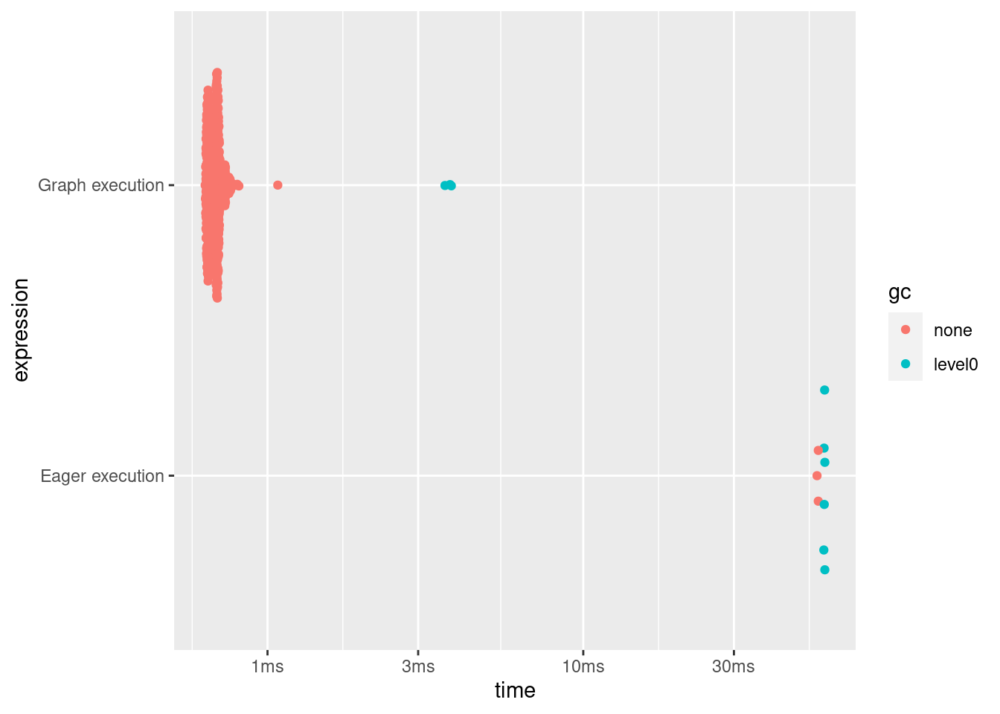

#@title Licensed under the Apache License, Version 2.0 (the "License");
# you may not use this file except in compliance with the License.
# You may obtain a copy of the License at
#
# https://www.apache.org/licenses/LICENSE-2.0
#
# Unless required by applicable law or agreed to in writing, software
# distributed under the License is distributed on an "AS IS" BASIS,
# WITHOUT WARRANTIES OR CONDITIONS OF ANY KIND, either express or implied.
# See the License for the specific language governing permissions and
# limitations under the License.Intro To_graphs
Introduction to graphs and tf_function
Overview
This guide goes beneath the surface of TensorFlow and Keras to demonstrate how TensorFlow works. If you instead want to immediately get started with Keras, check out the collection of Keras guides.
In this guide, you’ll learn how TensorFlow allows you to make simple changes to your code to get graphs, how graphs are stored and represented, and how you can use them to accelerate your models.
Note: For those of you who are only familiar with TensorFlow 1.x, this guide demonstrates a very different view of graphs.
This is a big-picture overview that covers how tf_function() allows you to switch from eager execution to graph execution. For a more complete specification of tf_function(), go to the tf_function() guide.
What are graphs?
In the previous three guides, you ran TensorFlow eagerly. This means TensorFlow operations are executed by Python, operation by operation, and returning results back to Python.
While eager execution has several unique advantages, graph execution enables portability outside Python and tends to offer better performance. Graph execution means that tensor computations are executed as a TensorFlow graph, sometimes referred to as a tf$Graph or simply a “graph.”
Graphs are data structures that contain a set of tf$Operation objects, which represent units of computation; and tf$Tensor objects, which represent the units of data that flow between operations. They are defined in a tf$Graph context. Since these graphs are data structures, they can be saved, run, and restored all without the original R code.
This is what a TensorFlow graph representing a two-layer neural network looks like when visualized in TensorBoard.

The benefits of graphs
With a graph, you have a great deal of flexibility. You can use your TensorFlow graph in environments that don’t have an R interpreter, like mobile applications, embedded devices, and backend servers. TensorFlow uses graphs as the format for saved models when it exports them from R.
Graphs are also easily optimized, allowing the compiler to do transformations like:
- Statically infer the value of tensors by folding constant nodes in your computation (“constant folding”).
- Separate sub-parts of a computation that are independent and split them between threads or devices.
- Simplify arithmetic operations by eliminating common subexpressions.
There is an entire optimization system, Grappler, to perform this and other speedups.
In short, graphs are extremely useful and let your TensorFlow run fast, run in parallel, and run efficiently on multiple devices.
However, you still want to define your machine learning models (or other computations) in Python for convenience, and then automatically construct graphs when you need them.
Setup
library(tensorflow)
library(magrittr, include.only = "%>%")Taking advantage of graphs
You create and run a graph in TensorFlow by using tf_function(), either as a direct call or as a decorator. tf_function() takes a regular function as input and returns a Function. A Function is a callable that builds TensorFlow graphs from the R function. You use a Function in the same way as its R equivalent.
# Define an R function.
a_regular_function <- function(x, y, b) {
x %>%
tf$matmul(y) %>%
{ . + b }
}
# `a_function_that_uses_a_graph` is a TensorFlow `Function`.
a_function_that_uses_a_graph <- tf_function(a_regular_function)Loaded Tensorflow version 2.9.1# Make some tensors.
x1 <- as_tensor(1:2, "float64", shape = c(1, 2))
y1 <- as_tensor(2:3, "float64", shape = c(2, 1))
b1 <- as_tensor(4)
orig_value <- as.array(a_regular_function(x1, y1, b1))
# Call a `Function` like a Python function.
tf_function_value <- as.array(a_function_that_uses_a_graph(x1, y1, b1))
stopifnot(orig_value == tf_function_value)On the outside, a Function looks like a regular function you write using TensorFlow operations. Underneath, however, it is very different. A Function encapsulates several tf$Graphs behind one API. That is how Function is able to give you the benefits of graph execution, like speed and deployability.
tf_function applies to a function and all other functions it calls:
inner_function <- function(x, y, b) {
tf$matmul(x, y) + b
}
outer_function <- tf_function(function(x) {
y <- as_tensor(2:3, "float64", shape = c(2, 1))
b <- as_tensor(4.0)
inner_function(x, y, b)
})
# Note that the callable will create a graph that
# includes `inner_function` as well as `outer_function`.
outer_function(as_tensor(1:2, "float64", shape = c(1, 2))) #%>% as.array()tf.Tensor([[12.]], shape=(1, 1), dtype=float64)If you have used TensorFlow 1.x, you will notice that at no time did you need to define a Placeholder or tf$Session().
Converting Python functions to graphs
Any function you write with TensorFlow will contain a mixture of built-in TF operations and R control-flow logic, such as if-then clauses, loops, break, return, next, and more. While TensorFlow operations are easily captured by a tf$Graph, R-specific logic needs to undergo an extra step in order to become part of the graph. tf_function() uses a library called {tfautograph} to evaluate the R code in a special way so that it generates a graph.
simple_relu <- function(x) {
if (tf$greater(x, 0))
x
else
as_tensor(0, x$dtype)
}
# `tf_simple_relu` is a TensorFlow `Function` that wraps `simple_relu`.
tf_simple_relu <- tf_function(simple_relu)
cat(
"First branch, with graph: ", format(tf_simple_relu(as_tensor(1))), "\n",
"Second branch, with graph: ", format(tf_simple_relu(as_tensor(-1))), "\n",
sep = ""
)First branch, with graph: tf.Tensor(1.0, shape=(), dtype=float64)
Second branch, with graph: tf.Tensor(0.0, shape=(), dtype=float64)Though it is unlikely that you will need to view graphs directly, you can inspect the outputs to check the exact results. These are not easy to read, so no need to look too carefully!
# This is the graph itself.
tf_simple_relu$get_concrete_function(as_tensor(1))$graph$as_graph_def()Most of the time, tf_function() will work without special considerations. However, there are some caveats, and the tf_function guide can help here, as well as the tfautograph Getting Started vignette
Polymorphism: one Function, many graphs
A tf$Graph is specialized to a specific type of inputs (for example, tensors with a specific dtype or objects with the same id()) (i.e, the same memory address).
Each time you invoke a Function with a set of arguments that can’t be handled by any of its existing graphs (such as arguments with new dtypes or incompatible shapes), Function creates a new tf$Graph specialized to those new arguments. The type specification of a tf$Graph’s inputs is known as its input signature or just a signature. For more information regarding when a new tf$Graph is generated and how that can be controlled, see the rules of retracing.
The Function stores the tf$Graph corresponding to that signature in a ConcreteFunction. A ConcreteFunction is a wrapper around a tf$Graph.
my_relu <- tf_function(function(x) {
message("Tracing my_relu(x) with: ", x)
tf$maximum(as_tensor(0), x)
})
# `my_relu` creates new graphs as it observes more signatures.
my_relu(as_tensor(5.5))Tracing my_relu(x) with: Tensor("x:0", shape=(), dtype=float64)tf.Tensor(5.5, shape=(), dtype=float64)my_relu(c(1, -1))Tracing my_relu(x) with: 1-1tf.Tensor([1. 0.], shape=(2), dtype=float64)my_relu(as_tensor(c(3, -3)))Tracing my_relu(x) with: Tensor("x:0", shape=(2,), dtype=float64)tf.Tensor([3. 0.], shape=(2), dtype=float64)If the Function has already been called with that signature, Function does not create a new tf$Graph.
# These two calls do *not* create new graphs.
my_relu(as_tensor(-2.5)) # Signature matches `as_tensor(5.5)`.tf.Tensor(0.0, shape=(), dtype=float64)my_relu(as_tensor(c(-1., 1.))) # Signature matches `as_tensor(c(3., -3.))`.tf.Tensor([0. 1.], shape=(2), dtype=float64)Because it’s backed by multiple graphs, a Function is polymorphic. That enables it to support more input types than a single tf$Graph could represent, as well as to optimize each tf$Graph for better performance.
# There are three `ConcreteFunction`s (one for each graph) in `my_relu`.
# The `ConcreteFunction` also knows the return type and shape!
cat(my_relu$pretty_printed_concrete_signatures())fn(x)
Args:
x: float64 Tensor, shape=()
Returns:
float64 Tensor, shape=()
fn(x=[1.0, -1.0])
Returns:
float64 Tensor, shape=(2,)
fn(x)
Args:
x: float64 Tensor, shape=(2,)
Returns:
float64 Tensor, shape=(2,)Using tf_function()
So far, you’ve learned how to convert a Python function into a graph simply by using tf_function() as function wrapper. But in practice, getting tf_function to work correctly can be tricky! In the following sections, you’ll learn how you can make your code work as expected with tf_function().
Graph execution vs. eager execution
The code in a Function can be executed both eagerly and as a graph. By default, Function executes its code as a graph:
get_MSE <- tf_function(function(y_true, y_pred) {
# if y_true and y_pred are tensors, the R generics mean`, `^`, and `-`
# dispatch to tf$reduce_mean(), tf$math$pow(), and tf$math$subtract()
mean((y_true - y_pred) ^ 2)
})(y_true <- tf$random$uniform(shape(5), maxval = 10L, dtype = tf$int32))tf.Tensor([5 3 4 7 6], shape=(5), dtype=int32)(y_pred <- tf$random$uniform(shape(5), maxval = 10L, dtype = tf$int32))tf.Tensor([9 4 6 3 7], shape=(5), dtype=int32)get_MSE(y_true, y_pred)tf.Tensor(7, shape=(), dtype=int32)To verify that your Function’s graph is doing the same computation as its equivalent Python function, you can make it execute eagerly with tf$config$run_functions_eagerly(TRUE). This is a switch that turns off Function’s ability to create and run graphs, instead executing the code normally.
tf$config$run_functions_eagerly(TRUE)get_MSE(y_true, y_pred)tf.Tensor(7, shape=(), dtype=int32)# Don't forget to set it back when you are done.
tf$config$run_functions_eagerly(FALSE)However, Function can behave differently under graph and eager execution. The R print() function is one example of how these two modes differ. Let’s check out what happens when you insert a print statement to your function and call it repeatedly.
get_MSE <- tf_function(function(y_true, y_pred) {
print("Calculating MSE!")
mean((y_true - y_pred) ^ 2)
})Observe what is printed:
error <- get_MSE(y_true, y_pred)[1] "Calculating MSE!"error <- get_MSE(y_true, y_pred)
error <- get_MSE(y_true, y_pred)Is the output surprising? get_MSE only printed once even though it was called three times.
To explain, the print statement is executed when Function runs the original code in order to create the graph in a process known as “tracing”. Tracing captures the TensorFlow operations into a graph, and print() is not captured in the graph. That graph is then executed for all three calls without ever running the R code again.
As a sanity check, let’s turn off graph execution to compare:
# Now, globally set everything to run eagerly to force eager execution.
tf$config$run_functions_eagerly(TRUE)# Observe what is printed below.
error <- get_MSE(y_true, y_pred)[1] "Calculating MSE!"error <- get_MSE(y_true, y_pred)[1] "Calculating MSE!"error <- get_MSE(y_true, y_pred)[1] "Calculating MSE!"tf$config$run_functions_eagerly(FALSE)print is an R side effect, and there are other differences that you should be aware of when converting a function into a Function. Learn more in the Limitations section of the Better performance with tf_function guide.
Note
Note: If you would like to print values in both eager and graph execution, use tf$print() instead.
Non-strict execution
Graph execution only executes the operations necessary to produce the observable effects, which includes:
- The return value of the function
- Documented well-known side-effects such as:
- Input/output operations, like
tf$print() - Debugging operations, such as the assert functions in
tf$debugging()(also,stopifnot()) - Mutations of
tf$Variable()
- Input/output operations, like
This behavior is usually known as “Non-strict execution”, and differs from eager execution, which steps through all of the program operations, needed or not.
In particular, runtime error checking does not count as an observable effect. If an operation is skipped because it is unnecessary, it cannot raise any runtime errors.
In the following example, the “unnecessary” operation tf$gather() is skipped during graph execution, so the runtime error InvalidArgumentError is not raised as it would be in eager execution. Do not rely on an error being raised while executing a graph.
unused_return_eager <- function(x) {
# tf$gather() will fail on a CPU device if the index is out of bounds
with(tf$device("CPU"),
tf$gather(x, list(2L))) # unused
x
}
try(unused_return_eager(as_tensor(0, shape = c(1))))Error in py_call_impl(callable, dots$args, dots$keywords) :
tensorflow.python.framework.errors_impl.InvalidArgumentError: indices[0] = 2 is not in [0, 1) [Op:GatherV2]# All operations are run during eager execution so an error is raised.unused_return_graph <- tf_function(function(x) {
with(tf$device("CPU"),
tf$gather(x, list(2L))) # unused
x
})
# Only needed operations are run during graph exection. The error is not raised.
unused_return_graph(as_tensor(0, shape = 1))tf.Tensor([0.], shape=(1), dtype=float64)tf_function() best practices
It may take some time to get used to the behavior of Function. To get started quickly, first-time users should play around with wrapping toy functions with tf_function() to get experience with going from eager to graph execution.
Designing for tf_function may be your best bet for writing graph-compatible TensorFlow programs. Here are some tips:
Toggle between eager and graph execution early and often with
tf$config$run_functions_eagerly()to pinpoint if/when the two modes diverge.Create
tf$Variables outside the Python function and modify them on the inside. The same goes for objects that usetf$Variable, likekeras$layers,keras$Models andtf$optimizers.Avoid writing functions that depend on outer Python variables, excluding
tf$Variables and Keras objects.Prefer to write functions which take tensors and other TensorFlow types as input. You can pass in other object types but be careful!
Include as much computation as possible under a
tf_functionto maximize the performance gain. For example, wrap a whole training step or the entire training loop.
Seeing the speed-up
tf_function usually improves the performance of your code, but the amount of speed-up depends on the kind of computation you run. Small computations can be dominated by the overhead of calling a graph. You can measure the difference in performance like so:
x <- tf$random$uniform(shape(10, 10),
minval = -1L, maxval = 2L,
dtype = tf$dtypes$int32)
power <- function(x, y) {
result <- tf$eye(10L, dtype = tf$dtypes$int32)
for (. in seq_len(y))
result <- tf$matmul(x, result)
result
}
power_as_graph <- tf_function(power)plot(bench::mark(
"Eager execution" = power(x, 100),
"Graph execution" = power_as_graph(x, 100)))Loading required namespace: tidyr
tf_function is commonly used to speed up training loops, and you can learn more about it in Writing a training loop from scratch with Keras.
Note: You can also try tf_function(jit_compile = TRUE) for a more significant performance boost, especially if your code is heavy on TF control flow and uses many small tensors.
Performance and trade-offs
Graphs can speed up your code, but the process of creating them has some overhead. For some functions, the creation of the graph takes more time than the execution of the graph. This investment is usually quickly paid back with the performance boost of subsequent executions, but it’s important to be aware that the first few steps of any large model training can be slower due to tracing.
No matter how large your model, you want to avoid tracing frequently. The tf_function() guide discusses how to set input specifications and use tensor arguments to avoid retracing. If you find you are getting unusually poor performance, it’s a good idea to check if you are retracing accidentally.
When is a Function tracing?
To figure out when your Function is tracing, add a print or message() statement to its code. As a rule of thumb, Function will execute the message statement every time it traces.
a_function_with_r_side_effect <- tf_function(function(x) {
message("Tracing!") # An eager-only side effect.
(x * x) + 2
})
# This is traced the first time.
a_function_with_r_side_effect(as_tensor(2))Tracing!tf.Tensor(6.0, shape=(), dtype=float64)# The second time through, you won't see the side effect.
a_function_with_r_side_effect(as_tensor(3))tf.Tensor(11.0, shape=(), dtype=float64)# This retraces each time the Python argument changes,
# as a Python argument could be an epoch count or other
# hyperparameter.
a_function_with_r_side_effect(2)Tracing!tf.Tensor(6.0, shape=(), dtype=float32)a_function_with_r_side_effect(3)Tracing!tf.Tensor(11.0, shape=(), dtype=float32)New (non-tensor) R arguments always trigger the creation of a new graph, hence the extra tracing.
Next steps
You can learn more about tf_function() on the API reference page and by following the Better performance with tf_function guide.